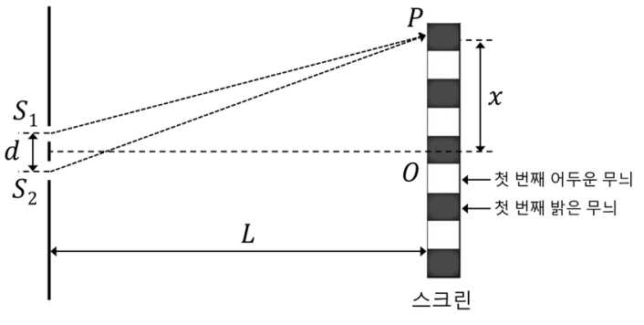

해설 2
(문제2-1) 이중 슬릿 실험에서 파동의 간섭을 이해하는 문제이다. 이중 슬릿의 간섭 실험을 이용하여 빛의 파장과 보강 간섭 및 상쇄 간섭이 일어나는 조건을 정확하게 이해하고 추론할 수 있는 능력을 평가하는 문제이다.
(문제2-2) 이중 슬릿 실험에서 파동의 간섭을 이해하는 문제임. 이중 슬릿의 간섭 실험을 이용하여 빛의 파장과 보강 간섭 및 상쇄 간섭이 일어나는 조건을 정확하게 이해하고 추론할 수 있는 능력을 평가하는 문제이다.

2-1
이중 슬릿의 상쇄 간섭 공식을 이용하여 어두운 무늬의 거리를 구한다. (5점)
주어진 이중 슬릿의 상쇄 간섭 공식을 이용하여 4번째 어두운 무늬 (m = 3)인 위치를 구한다.
\[x = \frac{\lambda L}{2d}(2m + 1) = \frac{600 \times 10^{-9} \times 3}{2 \times 180 \times 10^{-6}} \times 7 = 35 \times 10^{-3} = 0.035\]
따라서 4번째 어두운 무늬까지 거리는 0.035 m 또는 3.5 cm 이다.
2-2
이중 슬릿의 보강 간섭 공식을 이용하여 빛의 파장을 구한다. (5점)
주어진 이중 슬릿의 보강 간섭 공식을 이용하여 3번째 밝은 무늬 (m = 3)인 위치가 위에서 구한 0.035 m에 생기게 하는 빛의 파장을 구한다.
\[\lambda = \frac{dx}{Lm} = \frac{180 \times 10^{-6} \times 35 \times 10^{-3}}{3 \times 3} = 700 \times 10^{-9}\]
따라서 3번째 밝은 무늬가 0.035 m에 나타나게 하는 빛의 파장은 700 nm 이다.